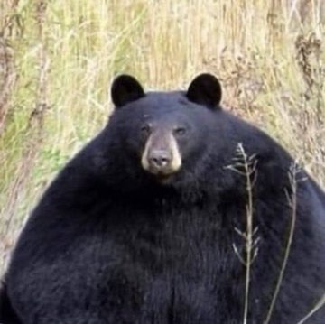

永雏布丁
@Ace_Purin
原来是你这家伙！

ネットの珍動画研究所
@medisarasu
【衝撃】体重227kg。住宅28軒を破壊した「巨大戦車」の正体。
まるで漫画のような、完全な「球体」のクマ。
全米を震わせた、あまりに食いしん坊な珍客の実話です。
■規格外のスペック
・通常の2倍以上重い、驚異の「227kg」
・もはや足が見えないほどパンパンな巨体 https://t.co/I2XUjXiFT5